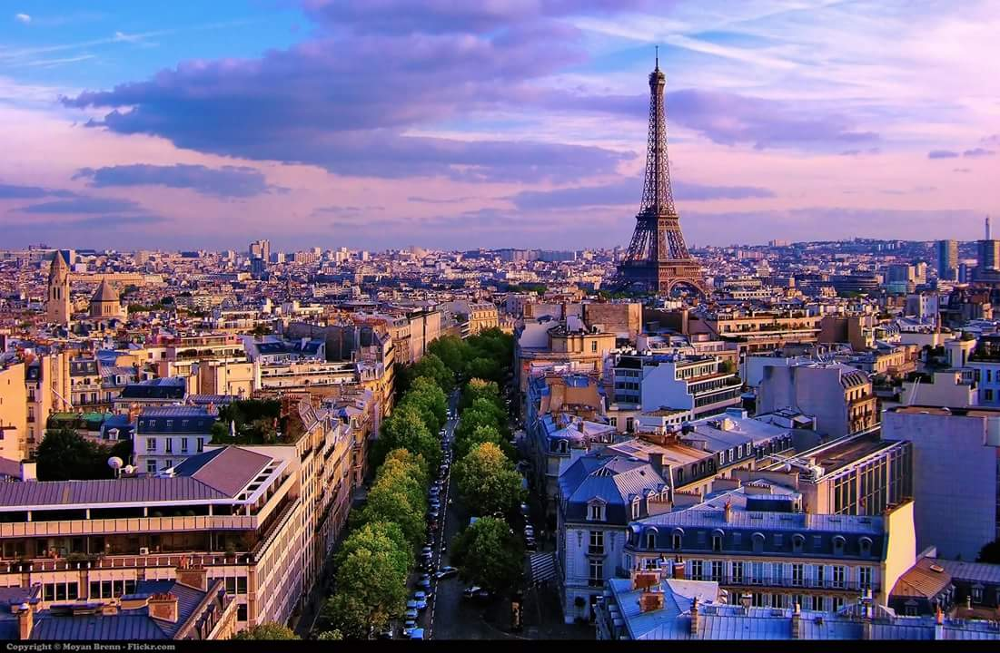
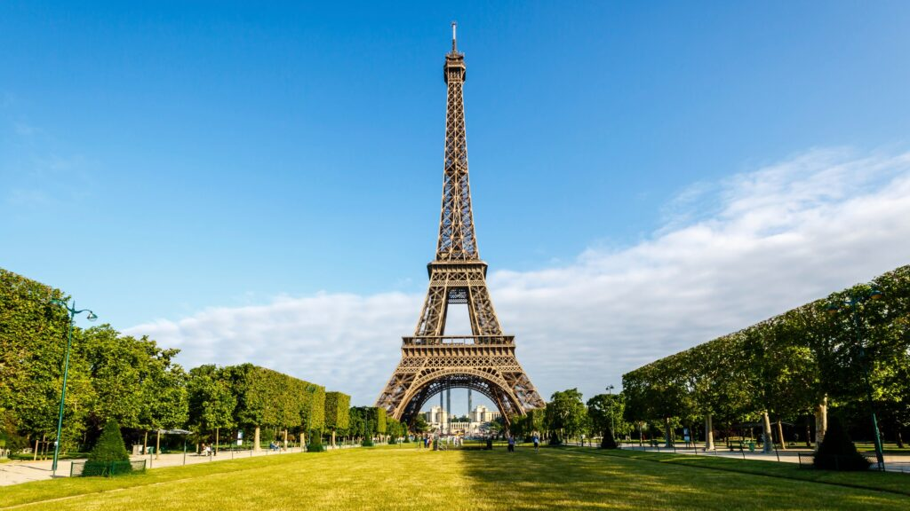
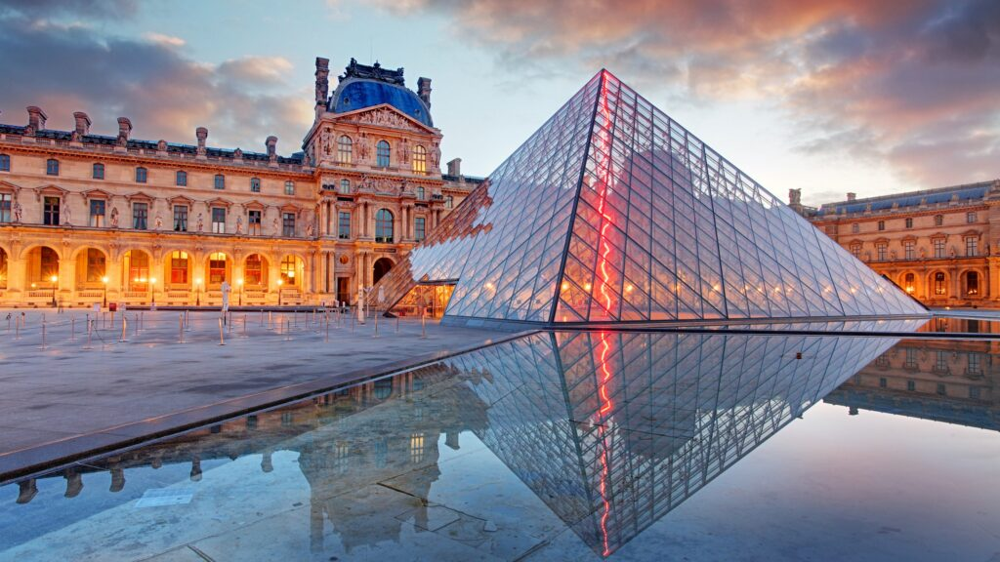
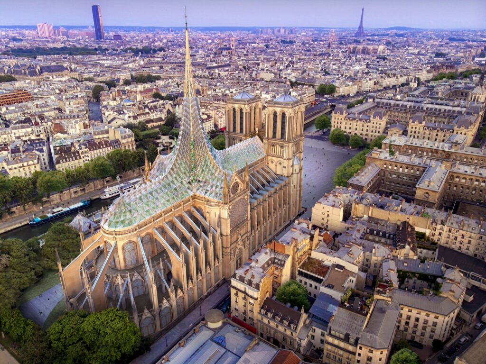
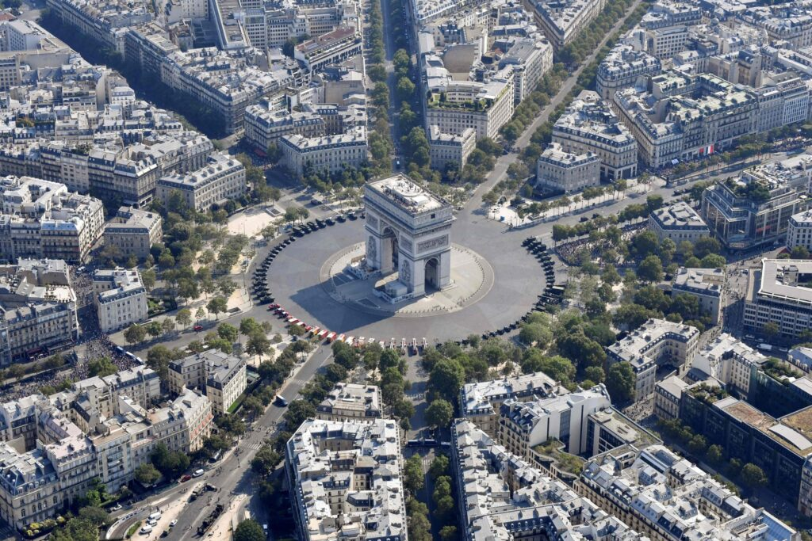
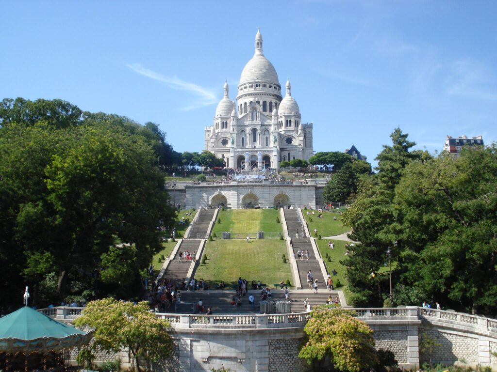

Paris is a picturesque dream destination. Spread along the banks of the Seine River in northern France, it stands out as one of those extravagant metropolises of the world.
Its urbanity shines with iconic architecture of historic monuments and old palaces, art museums, cathedrals, landscaped gardens and elegant shopping boutiques. The monuments and sights of France's capital are known all over the world and have become true symbols recognised by everyone.

The first thing that pops into our heads when we talk about Paris is the Eiffel Tower, one of the most popular places to go to in Paris. Named after the engineer Gustave Eiffel, the Eiffel Tower is a wrought iron tower and is considered to be the most important places to see in Paris.
The Eiffel Tower was erected on the occasion of the 1889 Universal Exhibition, held in Paris to celebrate the centenary of the French Revolution of 1789, an event that fundamentally marked the history of Europe. More than 100 artists submitted plans to erect a monument in the Champ-de-Mars in the centre of Paris, which would serve as a gateway to the exhibition space.
This is a place worth visiting. This is a place where you can have a completely different experience. It is not only one of the city's most important tourist attractions, but also one of the most beautiful places in the whole world. Without visiting this place, your trip in Paris remains incomplete. Make sure you have plenty of time while visiting this place.
Don't miss: a fabulous view of Paris from the new, transparent first and second floors, the souvenir shops in the Eiffel Tower, and the exotica and wine at Le 58 Tour Eiffel and Le Jules Verne

Notre Dame Cathedral is a famous and beautiful Roman Catholic cathedral - one of the top places to visit in Paris. The Gothic-style architecture, breathtaking sculptures and gargoyles fascinate every traveller. Its beauty lies in its ruins and arched roof. f you want to witness the beautiful architecture of Paris, then this place to be. The place has a unique charm that is hard to ignore. No wonder the place is treated as one of the most visited places in Paris.
On April 15, 2019, a fire broke out and severely damaged Notre Dame Cathedral. This fire started in the area where a series of renovation works were being carried out and was put out with difficulty by the Parisian firefighters. Unfortunately the spire and roof of the Cathedral burned and eventually collapsed, but the structure was saved.
Don't miss: Gorgeous architecture and wood carvings of interior decoration, "Parvis de Notre Dame" - the front courtyard and statute of Bas Relief and Jeanne D'Arc (Joan of Arc)

Located in the heart of the city, the Louvre Museum is the most visited and popular art museum and gallery in the world. It is also among the most beautiful places to visit in Paris. Spread over an area of 21,000 hectares, this museum is located in a royal fort, also called the Louvre.
As of 2008, the Louvre's collection is divided into eight distinct categories: Ancient Egypt; Near Eastern Antiquities; Greece, the Etruscans and the Roman Empire; Islamic Art; Sculpture; Decorative Art; Painting; Prints and Drawings.
Currently the museum houses over 380,000 objects and 35,000 works of art. Over 60,000 square meters are dedicated to permanent exhibits. Of the 15000 daily visitors more than 65% are foreigners.
Don't miss: Leonardo da Vinci's Mona Lisa, Victory of the Samothracian Victory, Michelangelo's Slaves of Death, Lamassus and the Great Sphinx of Tanis.

Built in honour of the imperial army in the 19th century, the Arc de Triomphe is an excellent structure and one of the famous sites in Paris.
The Arc de Triomphe was erected over the remains of an unknown soldier who died during the First World War and a perpetual facade burns into the foundation. From the Arc de Triomphe, traffic arteries lead in all directions and that is why the Place Charles de Gaulle where the Arc is located is also known as the "Place de l'Étoile".
The Arc de Triomphe is one of the most important symbols of France and that's why visiting it should not be missed if you are in Paris. The view is great and many even argue that it is more beautiful than the Eiffel Tower.

Montmartre is a hill located north of Paris. Known for its white-domed basilica and bustling Tertre market, this high area attracts a lot of tourists, qualifying it as one of the best places to visit in Paris.
A nearly 130-metre-high hill located in the north of Paris in the 18th arrondissement, Montmartre has long been recognised as Paris' artists' quarter. The word Montrmartre can be translated as "martyr's mountain" and is derived from the martyrdom of Saint Denis, the bishop of Paris who was beheaded at the top of the hill in 250 AD.